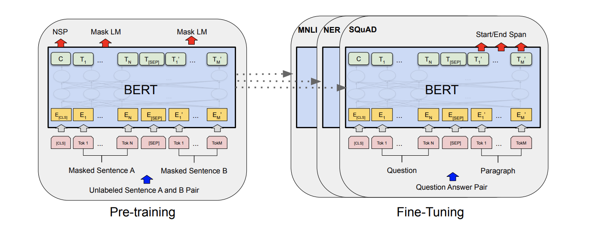
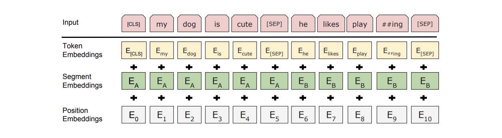

이 문서는 BERT 논문의 연구 결과 확인을 위한 리서치 리뷰 문서이며 새로운 연구 결과를 포함하고 있지 않습니다.
BERT: Pre-training of Deep Bidirectional Transformers for Language Understanding
BERT라 불리는 새로운 언어 표현 모델을 소개합니다. We introduce a new language representation model called BERT, which stands for Bidirectional Encoder Representations from Transformers. 최근 언어 표현 모델과 달리 (Peters et al., 2018a; Radford et al., 2018), BERT는 설계 되었습니다.
- pretrain deep bidirectional representations from unlabeled text by jointly conditioning on both left and right context in all layers.
As a result, the pre-trained BERT model can be finetuned with just one additional output layer to create state-of-the-art models for a wide range of tasks, such as question answering and language inference, without substantial taskspecific architecture modifications.
BERT is conceptually simple and empirically powerful.
- It obtains new state-of-the-art results on eleven natural language processing tasks, including pushing the GLUE score to 80.5% (7.7% point absolute improvement)
- MultiNLI accuracy to 86.7% (4.6% absolute improvement)
- SQuAD v1.1 question answering Test F1 to 93.2 (1.5 point absolute improvement)
- SQuAD v2.0 Test F1 to 83.1 (5.1 point absolute improvement).
3. BERT
We introduce BERT and its detailed implementation in this section. There are two steps in our framework: pre-training and fine-tuning. During pre-training, the model is trained on unlabeled data over different pre-training tasks. For finetuning, the BERT model is first initialized with the pre-trained parameters, and all of the parameters are fine-tuned using labeled data from the downstream tasks. Each downstream task has separate fine-tuned models, even though they are initialized with the same pre-trained parameters. The question-answering example in Figure 1 will serve as a running example for this section. A distinctive feature of BERT is its unified architecture across different tasks. There is minimal difference between the pre-trained architecture and the final downstream architecture.
Model Architecture
BERT’s model architecture is a multi-layer bidirectional Transformer encoder based on the original implementation described in Vaswani et al. (2017) and released in the tensor2tensor library.1 Because the use of Transformers has become common and our implementation is almost identical to the original, we will omit an exhaustive background description of the model architecture and refer readers to Vaswani et al. (2017) as well as excellent guides such as “The Annotated Transformer.”2 In this work, we denote the number of layers (i.e., Transformer blocks) as L, the hidden size as H, and the number of self-attention heads as A. 3 We primarily report results on two model sizes: BERTBASE (L=12, H=768, A=12, Total Parameters=110M) and BERTLARGE (L=24, H=1024, A=16, Total Parameters=340M). BERTBASE was chosen to have the same model size as OpenAI GPT for comparison purposes. Critically, however, the BERT Transformer uses bidirectional self-attention, while the GPT Transformer uses constrained self-attention where every token can only attend to context to its left.4

Figure 1: Overall pre-training and fine-tuning procedures for BERT. Apart from output layers, the same architectures are used in both pre-training and fine-tuning. The same pre-trained model parameters are used to initialize models for different down-stream tasks. During fine-tuning, all parameters are fine-tuned. [CLS] is a special symbol added in front of every input example, and [SEP] is a special separator token (e.g. separating questions/answers).
Input/Output Representations
To make BERT handle a variety of down-stream tasks, our input representation is able to unambiguously represent both a single sentence and a pair of sentences (e.g., h Question, Answeri) in one token sequence. Throughout this work, a “sentence” can be an arbitrary span of contiguous text, rather than an actual linguistic sentence. A “sequence” refers to the input token sequence to BERT, which may be a single sentence or two sentences packed together. We use WordPiece embeddings (Wu et al., 2016) with a 30,000 token vocabulary. The first token of every sequence is always a special classification token ([CLS]). The final hidden state corresponding to this token is used as the aggregate sequence representation for classification tasks. Sentence pairs are packed together into a single sequence. We differentiate the sentences in two ways. First, we separate them with a special token ([SEP]). Second, we add a learned embedding to every token indicating whether it belongs to sentence A or sentence B. As shown in Figure 1, we denote input embedding as E, the final hidden vector of the special [CLS] token as C ∈ R H, and the final hidden vector for the i th input token as Ti ∈ R H. For a given token, its input representation is constructed by summing the corresponding token, segment, and position embeddings. A visualization of this construction can be seen in Figure 2.

Figure 2: BERT input representation. The input embeddings are the sum of the token embeddings, the segmentation embeddings and the position embeddings.
3.1 Pre-training BERT
Unlike Peters et al. (2018a) and Radford et al. (2018), we do not use traditional left-to-right or right-to-left language models to pre-train BERT. Instead, we pre-train BERT using two unsupervised tasks, described in this section. This step is presented in the left part of Figure 1.
Task #1: Masked LM
Intuitively, it is reasonable to believe that a deep bidirectional model is strictly more powerful than either a left-to-right model or the shallow concatenation of a left-toright and a right-to-left model.
Task #2: Next Sentence Prediction (NSP)
Many important downstream tasks such as Question Answering (QA) and Natural Language Inference (NLI) are based on understanding the relationship between two sentences, which is not directly captured by language modeling.
3.2 Fine-tuning BERT
Fine-tuning is straightforward since the selfattention mechanism in the Transformer allows BERT to model many downstream tasks— whether they involve single text or text pairs—by swapping out the appropriate inputs and outputs. For applications involving text pairs, a common pattern is to independently encode text pairs before applying bidirectional cross attention, such as Parikh et al. (2016); Seo et al. (2017). BERT instead uses the self-attention mechanism to unify these two stages, as encoding a concatenated text pair with self-attention effectively includes bidirectional cross attention between two sentences. For each task, we simply plug in the taskspecific inputs and outputs into BERT and finetune all the parameters end-to-end. At the input, sentence A and sentence B from pre-training are analogous to (1) sentence pairs in paraphrasing, (2) hypothesis-premise pairs in entailment, (3) question-passage pairs in question answering, and (4) a degenerate text-∅ pair in text classification or sequence tagging. At the output, the token representations are fed into an output layer for tokenlevel tasks, such as sequence tagging or question answering, and the [CLS] representation is fed into an output layer for classification, such as entailment or sentiment analysis. Compared to pre-training, fine-tuning is relatively inexpensive. All of the results in the paper can be replicated in at most 1 hour on a single Cloud TPU, or a few hours on a GPU, starting from the exact same pre-trained model.7 We describe the task-specific details in the corresponding subsections of Section 4. More details can be found in Appendix A.5.
Experiments
Results are presented in Table 1. Both BERTBASE and BERTLARGE outperform all systems on all tasks by a substantial margin, obtaining 4.5% and 7.0% respective average accuracy improvement over the prior state of the art. Note that BERTBASE and OpenAI GPT are nearly identical in terms of model architecture apart from the attention masking. For the largest and most widely reported GLUE task, MNLI, BERT obtains a 4.6% absolute accuracy improvement. On the official GLUE leaderboard10, BERTLARGE obtains a score of 80.5, compared to OpenAI GPT, which obtains 72.8 as of the date of writing.

Table 1: GLUE Test results, scored by the evaluation server (https://gluebenchmark.com/leaderboard). The number below each task denotes the number of training examples. The “Average” column is slightly different than the official GLUE score, since we exclude the problematic WNLI set.8 BERT and OpenAI GPT are singlemodel, single task. F1 scores are reported for QQP and MRPC, Spearman correlations are reported for STS-B, and accuracy scores are reported for the other tasks. We exclude entries that use BERT as one of their components.